Bsp.: Allel f. Augenfarbe d. Mutter bei Autosomchromosom 3 $\implies$ Beim Vater auch bei Autosomchromosom 3
D. ist dann bei jedem Menschen auf Autosomchromosom 3 !!!
Synthetische Lethalität
Lethal = tödl.
synthetische Lethalität tritt nur ein, wenn beide Gene đ. Inhibitoren oder Mutationen ausgeschaltet wurden
Bsp.:
Stammbaumanalyse
Monogene Vererbung
Uniformitätsregel:
Kreuzung zw. homozygoten Individuen ($\forall$ Allele gleich), d. sich in einem Merkmal unters., führen zu einer Nachkommensgeneration mit $\equiv$ Merkmal
Spaltungsregel:
Wenn man d. $G_1-Generation$ mit sich selbst kreuzt, dann hat das Nachkommen eine phänotypische Vert. v. 3:1 und eine genotypische Vert. v. 1:2:1
Unabhängigkeitsregel:
Unterschiedl. merkmale werden unabhängig v.einander vererbt
Bsp.:
Gen A = Transkriptionsfaktor f. Anthocyanin = verantw. f. violette Farbe
hier ist d. Unters., dass d. jeweils ein ganzes Chromosom an d. jewilige Polen gezogen wird
zuvällige Verteilung: An jedem Pol mütterl. & väterl. Chromosomen
D. passiert jzt. nochmal mit den Tochterzellen
* keine Interphase
Prophase II
$\lnot$ Cross-Over
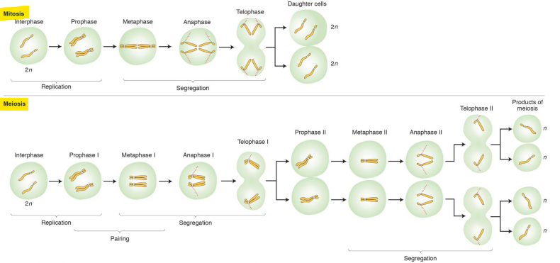
Unters. zw. Mann & Frau
Polkörperchen $\to$ sterben ab
Monogene Vererbung mit mehreren Allelen
Bsp.:
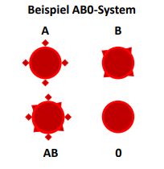
A & B = unterschiedl. Antigene auf Oberfläche
Wenn A oder B vorhanden $\xrightarrow{wird}$ augeprägt $\implies 0$ rezessiv
AB = Kodominanz, weil beiden ausgeprägt
Jeder Mensch hat 2 Allele f. d. Blutgruppe
eins v. Mama & eins v. Papa
bei d. Meiose werden die einzelnen Allele aufgeteilt
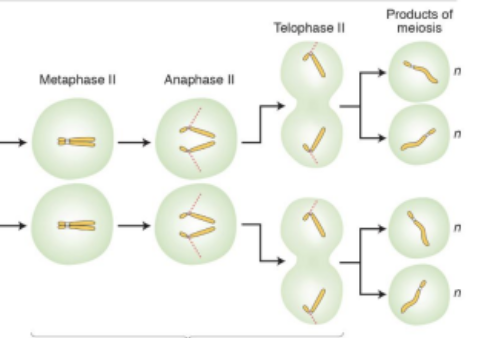
Polygene Vererbung
vererbte Merkmale = keine klare Entweder-oder-Ausprägung $\xrightarrow{\text{stattdessen}}$ kontinuierlichen Ausprägung in d. Bevölkerung
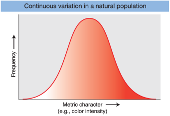
Polygenie $\leftrightarrow$ Pleiotropie
Polygene
mehrere Gene $\to$ ein Phänotyp
Beschreibt, wie viele Gene zsm.wirken, um ein einziges, oft quantitatives Merkmal (wie Körpergröße oder Hautfarbe) zu bestimmen
D. Gene addieren sich so zu sagen
verantw. Gene ü. Genom verteilt + oft auf unterschiedl. Chromosomen $\xrightarrow{\text{führt zu}}$ zufälligen Kombinationen & folgt Unabhängigkeitsregel
Pleiotopie
Gegenteil v. Polygene
ein Gen $\to$ mehrere Phänotypen
dies beschriebt, wie ein einziges Gen durch seine Wirkung aud grundlegende Prozesse des Körpers gleichzeitig mehrere, scheinbar unabhängige Merkmale oder Symptome beeinflusst.
Ein Gen = mehrere Funktionen & beeinflusst somit mehrere Merkmale
Beispielstammbäume:
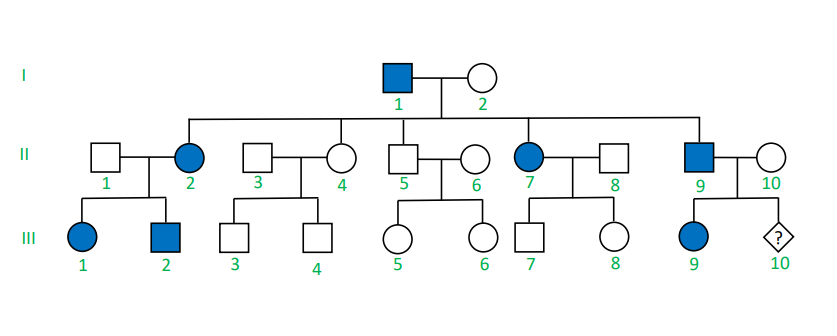
Vererbungsart:
Verhältnis zw. Männern & Frauen $\equiv \ \ \to$ autosomal
$3/5 = 60 %$ đ.gesetzt
$2/5 = 40% \ \lnot$ đ.gesetzt
d. Krankheit tritt in jeder Generation auf
= dominant
$II-10$ = Wahrscheinlichkeit bei 50% krank zu sein
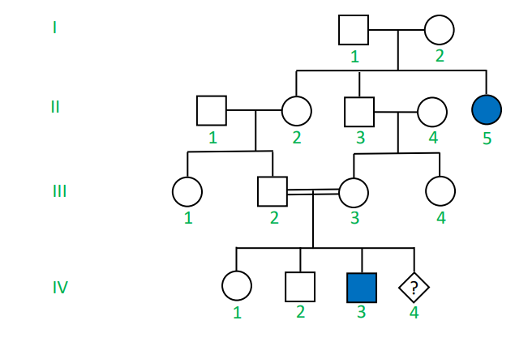
Vererbungsart:
tritt nur in 2 Gen. auf + Mutter & Vater gesund & dennoch ein krankes Kind = rezessiv
Verhältnis zw. kranken & Männern & Frauen $\equiv$
= autosomal
$IV-4$ zu $25 %$ krank
Vererbungsart:
Tritt in jeder Gen. auf = dominant
Frauen eher betroffen als Männer
Vater in $I-1$ krank, aber gesunde Söhne, aber kranke Töchter. D. Mann hat 100% sein Y Chromosom an seine Söhne gegeben $=$ krankes Gen muss auf seinem X-Chromosom liegen. D. Söhne sind nur krank, wenn sie d. X-Chromosom d. Mutter bekommen, welches d. X-Chromosom 100% vererbt bekommt, weil Töchter beide X-Chromosomen v. d. Mutter als auch v. d. Vater vererbt bekommen = X-Chromosomal
$IV-5$: Söhne = $0%$, Töchter $100%$
$IV-11$ Söhne = $50%$, Töchter $50%$
Vererbungsart:
tritt nicht in jeder Gen. auf = rezessiv
Frauen = Träger
nur Männer betroffen
X-Xhromosomal
$IV-4$: Söhne = $50%$, Töchter = $50%$
$III-12$: Söhne = $100%$ gesund, Töchter = $100%$ ein Konduktor
Vererbungsart:
Nur Männer betroffen = gonosomal
tritt in jeder Generation auf = dominant
Jeder Sohn Krankheit ausgeprägt, wenn Vater auch ausgeprägt
gonosomal + dominant = Y-Chromosomal
Vererbungsart:
Alle Kinder betroffen, wenn Mutter betroffen
Wenn Vater betroffen, dann Kinder $\lnot$ betroffen
Mitochondriale Vererbung
Vererbungsart:
ü.springt Gen. = rezessiv
betroffene Männer & Frauen $\equiv$
es muss autosomal sein, weil ansonsten Familie B: $I-1,2$ $\lnot$ aufgeht
$a$ = krank, $A$ = gesund:
$II-2$ muss $X_aX_a$ haben. $I-1$ muss $X_aY$ haben & müsste krank sein(ist er aber nicht), deswegen muss es eine autosomal sein
a = krank, A = gesund:
$I-1,2: Aa \to II-2: aa$
seltene Erkrankung
Wahrscheinlichkeit
$IV-2 \text{ ist } Aa = \text{Wahrscheinlichkeit } III-2 \text{ Aa erbt} = \frac{1}{2} \cdot \text{Wahrscheinlichkeit } IV-2 \text{ Aa vererbt} = \frac{1}{2} = \frac{1}{2} \cdot \frac{1}{2} = \frac{1}{4} = 25%$
$V-1 = (\text{Wahrscheinlichkeit, d. IV-2 Aa erbt}) \cdot (\text{Wahrscheinlichkeit, d. IV-1 Aa erbt}) \cdot (\text{Wahrscheinlichkeit, d. V-1 aa erbt}) = \frac{1}{4} \cdot \frac{1}{2} \cdot \frac{1}{4} = \frac{1}{32} = \underline{3,125%}$
tritt in jeder Generation auf, aber $\text{III-1,2}$: $\forall$ Kinder gesund
$\text{II-5,6}$: trotz gesunden Eltern = ein kranker Sohn
$\text{III-5,6}$: Trotz gesunden Eltern = 2 Kinder krank
rezessiv
Warum $\lnot$ X-chromosomal ?
$\text{III-5} \times \text{III-6}$: Muss $X_AX_a \ & \ X_AY$ sein = d. Tochter $\text{IV-10}$ kann eigentl. $\not$ krank sein, weil d. Vater $100%$ d. gesunde $X_A$ Chromosom weitergeben müsste. Deswegen autosom
wenn wir d. Wahrscheinlichkeit berechnen wollen, dass zwei oder mehr unabhängige Ereignisse nacheinander oder gleichzeitig eintreten müssen
Summenregel (&):
Was sind gekoppelte Gene ?:
Gene, d. auf dem gleichen Chromosom sehr nah beieinanander liegen $\to$ tendieren dazu zsm. vererbt zu werden
Kann nur durch Crossing-Over getrennt werden
Crossing-Over
nur so können sich homologe Chromosomen zusammenfinden & sich richtig aufteilen
Chiasmas = Überkreuzungsstelle
physische Verbindung, die das homologe Paar zsm.hält $\to$ entscheidend f. korrekte Paarung d. Chromosomen in Metaphase I & Anaphase I richtig voneinander trennen.
Rekombination: Chromosomen pro Meiose, ca. 2-3 crossing over
$\lnot$ gleichmäßig $\to$ finden in Hotspots statt (1-2 kb (Kilobasen) $\leftrightarrow$ 1000-2000 Basenpaare)
Sister chromatids $\to$ Schwesterchromatiden
Homologous chromosomes $\to$ Homologe Chromosomen
Synaptonemal complex $\to$ Synaptonemaler Komplex (Struktur, die die homologen Chromosomen zusammenhält)
Wie kommt es zu einem so präzisen Austausch v. doppelsträngiger DNA?
Wirt (E. coli) $\underrightarrow{\ \ \ \ \textcolor{#d6b315}{\text{Mutation}}\ \ \ \ }$ im eigenen Genom $\underrightarrow{\ \ \ \ \textcolor{#d6b315}{\text{ihm fehlt}}\ \ \ \ }$ ein Teil des lacZ-Gens
1Normalerweise bricht d. DNA bei Extraktion sehr leicht ab. Hochmolekular bedeutet, dass sie sehr lang geblieben sind (50.000 bis 100 Mio. Basenpaare lang) Warum wichtig ? Damit man d. gesamte Genom wie ein Puzzle zsm.setzen kann, ist es einfacher größere Puzzle zu haben!
Würde man sie sofort auf Amp-Platte legen $\implies$ sofort tot
N. d. Regeneraionszeit $\underrightarrow{\ \ \ \ \textcolor{#d6b315}{\text{Bakterien} \to \text{aufgestrichen}}\ \ \ \ }$ Agar-Platte
beinhaltet folgende Stoffe:
Ampicillin
IPTG & X-Gal = Blau-Weiß-Selektion
blau= Misserfolg
weiß = Erfolg
Kurs 4: Chromosomen
Woraus bestehen Chromosomen:
Desoxyribonukleinsäure
mit Proteinen:
basische Histone & sauer Nichthiston-Proteinen
regulatorische RNA:
RNA
"Bote" f. Bauanleitungen
wie Erbgut (Chromatin) verpackt und gesteuert wird
Strukturgeber:
hilft Chromatin in eine bestimmte Form zu bringen $\underrightarrow{\ \ \ \ \textcolor{#d6b315}{\text{Bsp.:}}\ \ \ \ }$ Barr-Körperchen
Frauen $\underrightarrow{\ \ \ \ \textcolor{#d6b315}{ \frac{1}{2} \text{ X-Chromosomen}}\ \ \ \ }$ abgeschaltet & eng verpackt $\to$ RNA-Moleküle $\underrightarrow{\ \ \ \ \textcolor{#d6b315}{\text{lagern sich dort an}}\ \ \ \ }$ Chromosom „stillgelegt“
D. Mensch hat sich so angepasst, dass man nur ein X-Chromosom benötigt, um sich fortzupflanzen (Männer haben nur ein X). Die Frauen jedoch haben 2 X. In jeder Zelle wird spontan d. väterl. oder d. mutterl. X-Chromosomenpaar ausgeschaltet. Dieses formt dich zu einem Klumpen = Barr-Körperchen
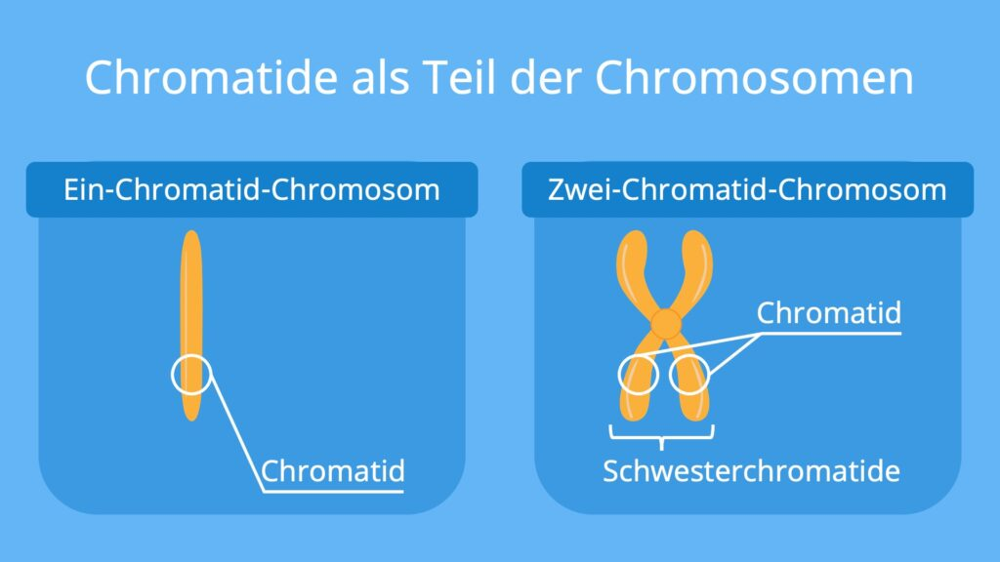
Kopplungsgruppen = gekoppelte Gene
Zellzyklus:
Nukleolus-Organisator-Regionen (NOR)
NOR = Stellen auf DNA $\underrightarrow{\ \ \ \ \textcolor{#d6b315}{\text{festlegen}}\ \ \ \ }$ wo im Zellkern d. "Ribosomen-Fabriken" aufgebaut werden
verantw. f. Aufbau des Nukleolus
„Bauleiter“ oder „Zentralen“ für die Herstellung v. Ribosomen


 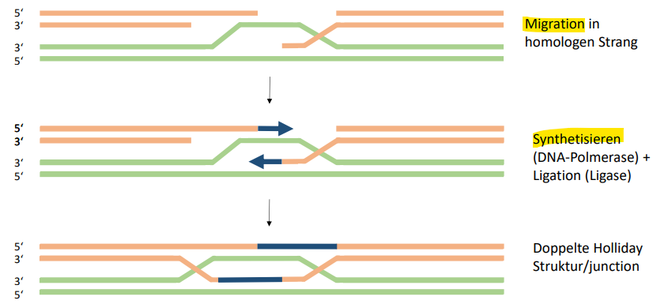
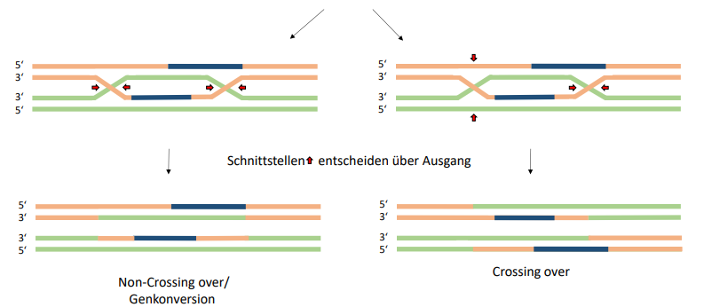
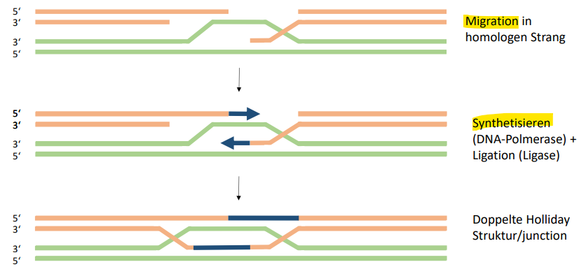
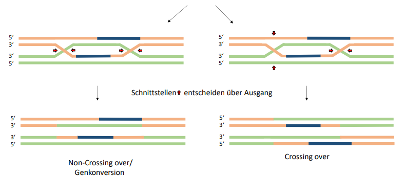 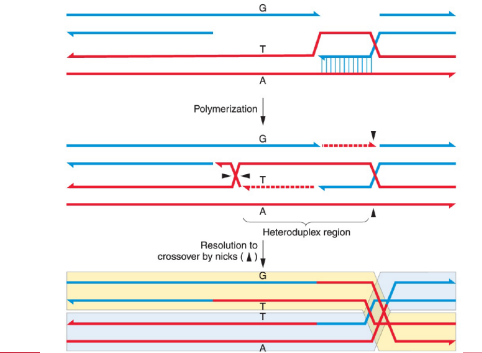
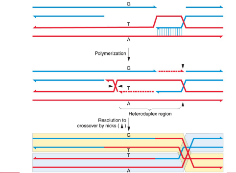 $\left(\frac{(151 + 154)}{1339+1195+151+154}\right) \cdot 100 = 10.7432% \to 10.7432cM \ [centiMorgan]$
$\left(\frac{(151 + 154)}{1339+1195+151+154}\right) \cdot 100 = 10.7432% \to 10.7432cM \ [centiMorgan]$